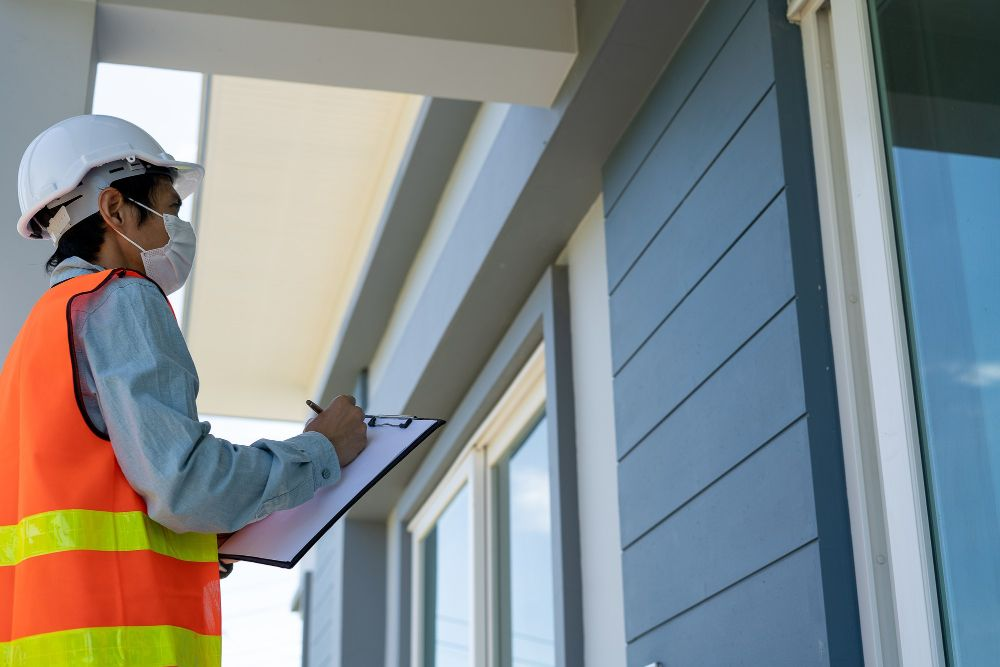
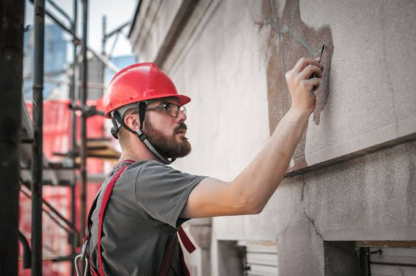
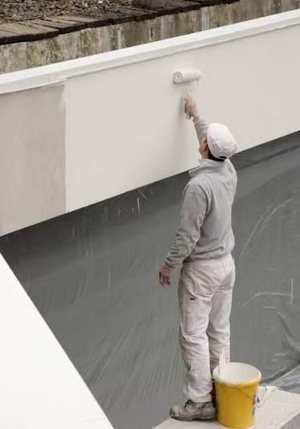

01
Facade Inspection
Assess the condition of the existing facade and identify areas requiring attention.
Explore ↗
Inspect, prepare and repair existing facades, then protect them long-term with suitable coating systems.

Facade renovation is about understanding the existing building, identifying what needs attention and creating a surface that is prepared for lasting protection.
From repairs and surface preparation to suitable coatings and visual redesign, every stage contributes to the condition and appearance of the property.
Every facade requires its own approach. We combine careful preparation, appropriate materials and precise execution.

Assess the condition of the existing facade and identify areas requiring attention.
Explore ↗
Prepare surfaces correctly and repair areas that require professional attention.
Explore ↗
Apply suitable coating systems designed to support long-term facade protection.
Explore ↗
Refresh the appearance of the building with a contemporary and considered finish.
Explore ↗Paint alone does not create a premium surface. The difference comes from preparation, materials and professional execution.
 BEFORE
BEFORE
 AFTER
AFTER

Understanding the existing substrate is the starting point for the right treatment.
Proper cleaning, repair and preparation create the foundation for the finish.
Suitable materials and coating systems are selected according to the surface.
The right coating provides the desired appearance and supports long-term protection.
Careful application and attention to detail complete the process.
From the first inspection to the final handover, every stage follows a clear and professional process.
Inspect the facade and understand its current condition.

Assess surfaces, damage and the work required.

Clean, repair and prepare the facade for renovation.

Carry out the required renovation and repair work.

Apply the appropriate coating system for the facade.

Inspect the finished result and complete a clean handover.


Protect the building facade and support its long-term condition.

Improve the visual appearance and give the property a fresh look.
Every durable finish starts with a properly prepared surface.
Materials and coating systems are selected to suit the facade.
Professional application with attention to the details that matter.
Thoughtful renovation helps maintain the building over time.

Regular maintenance, professional renovation and suitable coatings can contribute to protecting the building and maintaining the property's condition.
Discover Property Preservation ↗Professional facade inspection, renovation, protection and redesign — carried out with care from preparation through completion.